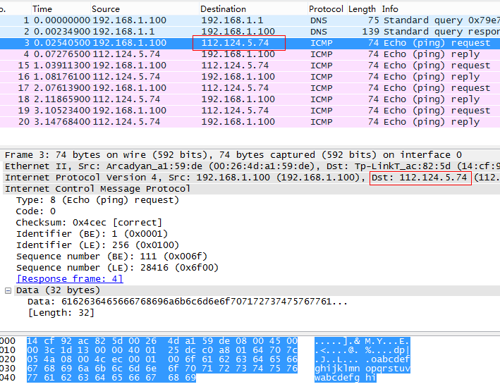
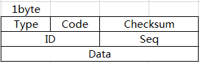
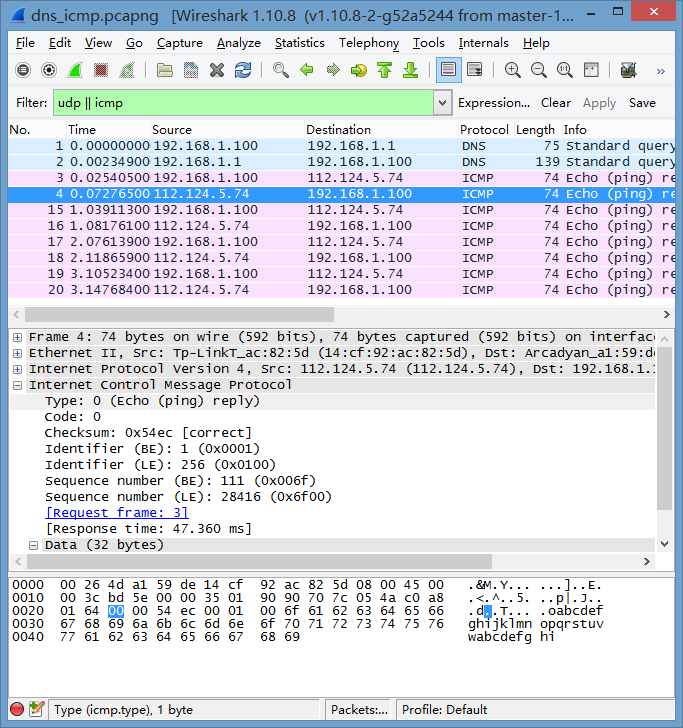

ICMP是（Internet Control Message Protocol）Internet控制报文协议。它是TCP/IP协议族的一个子协议，用于在IP主机、路由器之间传递控制消息。控制消息是指网络通不通、主机是否可达、路由是否可用等网络本身的消息。这些控制消息虽然并不传输用户数据，但是对于用户数据的传递起着重要的作用
CMP为TCP/IP协议簇中的成员,工作在网络层,作用是在主机和路由器之间传递控制信息.
上文中Ping命令完成DNS域名解析任务后,随即利用得到的第一条主机资源记录(A记录)中的IP地址发送ICMP请求报文:

图中可以看到ICMP报文格式:

Type(类型)以及Code(代码)合起来说明ICMP报文类型.
–这里ICMP的类型是:请求(0x8)表示ping请求; 响应(0x0)表示ping响应
Checksum(校验和)包含整个ICMP报文数据的校验.
ID(标识符)和Seq(序列号)由发送端任意设置,响应报文返回相同的值,用于配对请求和响应.
–比如,在这个例子中,ID字段和Seq有两种表示方式:大端和小端,在请求和响应报文中,ID值始终不变;但是每发送一次请求,Seq就被加一.
随后的Data数据段长度不固定,ping命令的发送的Echo请求数据是32bytes的a~i字符序列,且没有终止0,
刚好印证了为什么Ping时会显示: “Ping xxx 具有32字节的数据:” 这里32字节的数据就是a~i字符序列.
ICMP响应报文中:

Type值是0x0,表示 ping reply,这一点显而易见的.
ID和Seq值和请求报文中的相同.
Data也是相同的.
在接收到响应之后同时计算出报文往返的时间,这里是Response time: 47.360ms
这样就完成了一次Ping
之后的三个Ping其实是重复上述操作,只不过Seq序号字段要自增.
今天就到这里,欢迎大家学习交流,其实我更希望得到大家的意见,谢谢点赞~